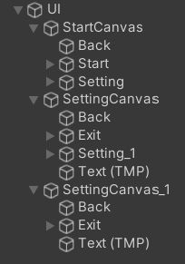
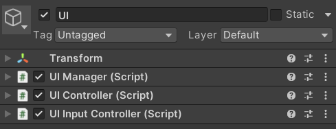
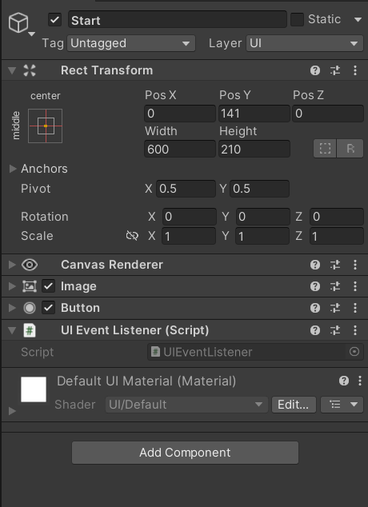
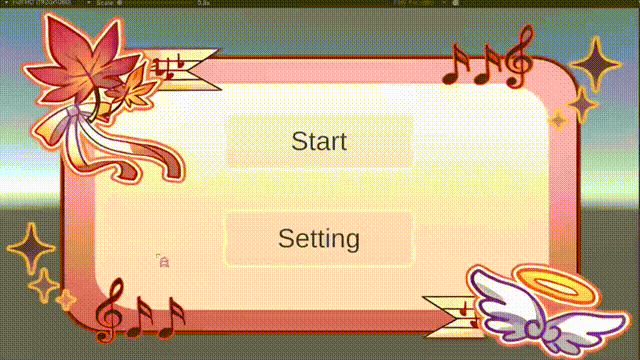

# 观前提醒
这是一个用于学习的框架，内容比较简单，适合新手。
项目会在 GitHub 中开源，链接：https://github.com/Maikire/Unity/tree/main/UnityFramework/A simple Unity UI framework
如果有什么问题或想法，欢迎各位在评论区留言。
# UI 框架
这是一个简单的 UI 框架，用于统一管理 UI 和 UI 事件
# 需求分析
- UI 窗口（Canvas）的统一管理（记录 / 隐藏所有窗口，提供查找窗口的方法）
- UI 事件管理
# 核心类
- UI 管理类 UIManager
UIManager 用于管理（记录 / 隐藏）所有窗口，提供查找窗口的方法 - UI 窗口类 UIWindow
UIWindow 是所有 UI 窗口的基类，可以代表所有窗口（概念继承，以层次化方式管理类）、定义所有窗口共有的行为（比如：显示和隐藏） - UI 事件监听器 UIEventListener
UIEventListener 提供所有能用到的 UI 事件（带事件参数类）
为什么要写UI事件监听器？
因为 Button 组件有几个致命的问题：
- Button 只有单击事件，而其他大多数事件（光标按下、光标抬起...）都不具备。
- Button 没有事件参数类（当多个按钮绑定同一个方法时，没有事件参数，就无法确定是哪个按钮被按下了）。
# 代码部分
# UI 管理类 UIManager
- 因为只需要一个 UIManager 的实例，所以可以使用单例模式。
单例模式的相关内容，请看这篇文章：http://maikire.xyz/2023/03/24/DesignPatterns/ 单例模式 / - 使用静态的字典来储存所有的 UI
- 提供查找、添加的功能
代码如下：
/// <summary> | |
/// UI 管理器：管理（记录 / 隐藏）所有窗口，提供查找窗口的方法 | |
/// </summary> | |
public class UIManager : MonoSingleton<UIManager> | |
{ | |
//key: 窗口对象名称 value: 窗口对象引用 | |
private Dictionary<string, UIWindow> UIWindowDIC; // 窗口对象字典 | |
/// <summary> | |
/// 初始化 | |
/// </summary> | |
public override void Init() | |
{ | |
base.Init(); | |
InitDic(); | |
} | |
/// <summary> | |
/// 初始化字典 | |
/// </summary> | |
private void InitDic() | |
{ | |
UIWindowDIC = new Dictionary<string, UIWindow>(); | |
foreach (var item in FindObjectsOfType<UIWindow>()) | |
{ | |
AddWindow(item); | |
item.SetVisible(false); | |
} | |
} | |
/// <summary> | |
/// 根据类型查找窗口 | |
/// </summary> | |
/// <typeparam name="T"></typeparam> | |
/// <returns></returns> | |
public T GetWindow<T>() where T : UIWindow | |
{ | |
string T_Name = typeof(T).Name; | |
if (!UIWindowDIC.ContainsKey(T_Name)) return null; | |
return UIWindowDIC[T_Name] as T; | |
} | |
/// <summary> | |
/// 添加窗口 | |
/// </summary> | |
/// <param name="window"> 窗口对象 & lt;/param> | |
public void AddWindow(UIWindow window) | |
{ | |
UIWindowDIC.Add(window.GetType().Name, window); | |
} | |
} |
# UI 窗口类 UIWindow
- 所有窗口的父类
- 关于显示 / 隐藏的设置方法：使用 CanvasGroup 可以统一调节透明度（以此实现淡入淡出），使用 this.gameObject.SetActive () 调节 UI 的开关
- 提供查找 UI 事件监听器的方法（原因：UI 窗口查找 UI 事件监听器往往会有很多次，所以将获取 UI 事件监听器的方法封装到父类）
- 在查找 UI 事件监听器时，需要用到一个方法 FindChildByName ()，作用是：在未知层级的情况下查找指定子物体的变换组件
有关这个方法的内容，请看这篇文章：http://maikire.xyz/2023/03/24/Unity/UnityToolClass/ 未知层级的情况下查找指定子物体的变换组件 /
代码如下：
[RequireComponent(typeof(CanvasGroup))] | |
/// <summary> | |
/// 所有窗口的父类 | |
/// </summary> | |
public class UIWindow : MonoBehaviour | |
{ | |
private CanvasGroup UICanvasGroup; // 画布组 | |
private Dictionary<string, UIEventListener> UIEventDic; // 存储 UI 事件监听器 | |
private void Awake() | |
{ | |
UICanvasGroup = this.GetComponent<CanvasGroup>(); | |
UIEventDic = new Dictionary<string, UIEventListener>(); | |
} | |
/// <summary> | |
/// 设置 UI 的可见性 | |
/// </summary> | |
/// <param name="state"> 状态 & lt;/param> | |
public void SetVisible(bool state /*float delay = 0*/) | |
{ | |
gameObject.SetActive(state); | |
} | |
/// <summary> | |
/// 延迟设置 UI 的可见性 | |
/// </summary> | |
/// <param name="alpha">alpha</param> | |
/// <param name="delay"> 延迟时间 & lt;/param> | |
public void SetVisibleAlpha(float alpha, float delay) | |
{ | |
StartCoroutine(SetVisibleAlphaDelay(alpha, delay)); | |
} | |
/// <summary> | |
/// 延迟设置 UI 的可见性 | |
/// </summary> | |
/// <param name="alpha">alpha</param> | |
/// <param name="delay"> 延迟时间 & lt;/param> | |
/// <returns></returns> | |
private IEnumerator SetVisibleAlphaDelay(float alpha, float delay) | |
{ | |
yield return new WaitForSeconds(delay); // 至少延迟一帧 | |
UICanvasGroup.alpha = alpha; | |
if (alpha <= 0) | |
{ | |
gameObject.SetActive(false); | |
} | |
else | |
{ | |
gameObject.SetActive(true); | |
} | |
} | |
/// <summary> | |
/// 查找 UI 事件监听器 | |
/// </summary> | |
/// <param name="UIName"></param> | |
/// <returns></returns> | |
public UIEventListener GetUIEventListener(string UIName) | |
{ | |
if (!UIEventDic.ContainsKey(UIName)) | |
{ | |
UIEventListener uiEventListener = UIEventListener.GetListener(this.transform.FindChildByName(UIName)); | |
UIEventDic.Add(UIName, uiEventListener); | |
return uiEventListener; | |
} | |
else | |
{ | |
return UIEventDic[UIName]; | |
} | |
} | |
} |
# UI 事件监听器 UIEventListener
- 提供所有能用到的 UI 事件（带事件参数类）
- 实现 UGUI 的接口
- 提供获取 UI 事件监听器的方法（如果没有，就添加一个）
代码如下：
/// <summary> | |
/// UI 事件监听器，提供所有能用到的 UGUI 事件（带事件参数类）。 | |
/// 脚本添加到需要交互的 UI | |
/// </summary> | |
public class UIEventListener : MonoBehaviour, IPointerClickHandler, IPointerDownHandler, IPointerUpHandler, IPointerEnterHandler, IPointerExitHandler, IInitializePotentialDragHandler, IBeginDragHandler, IDragHandler, IEndDragHandler, IDropHandler, IScrollHandler, IUpdateSelectedHandler, ISelectHandler, IDeselectHandler, IMoveHandler, ISubmitHandler, ICancelHandler, IEventSystemHandler | |
{ | |
public delegate void PointerEventHandler(PointerEventData eventData); | |
public delegate void BaseEventHandler(BaseEventData eventData); | |
public delegate void AxisEventHandler(AxisEventData eventData); | |
public event PointerEventHandler PointerClick; | |
public event PointerEventHandler PointerDown; | |
public event PointerEventHandler PointerUp; | |
public event PointerEventHandler PointerEnter; | |
public event PointerEventHandler PointerExit; | |
public event PointerEventHandler InitializePotentialDrag; | |
public event PointerEventHandler BeginDrag; | |
public event PointerEventHandler Drag; | |
public event PointerEventHandler EndDrag; | |
public event PointerEventHandler Drop; | |
public event PointerEventHandler Scroll; | |
public event BaseEventHandler UpdateSelected; | |
public event BaseEventHandler Select; | |
public event BaseEventHandler Deselect; | |
public event BaseEventHandler Submit; | |
public event BaseEventHandler Cancel; | |
public event AxisEventHandler Move; | |
/// <summary> | |
/// 获取 UI 事件监听器 | |
/// </summary> | |
/// <param name="transform"></param> | |
/// <returns></returns> | |
public static UIEventListener GetListener(Transform transform) | |
{ | |
UIEventListener uiEventListener = transform.GetComponent<UIEventListener>(); | |
if (uiEventListener == null) | |
{ | |
uiEventListener = transform.AddComponent<UIEventListener>(); | |
} | |
return uiEventListener; | |
} | |
public void OnPointerClick(PointerEventData eventData) | |
{ | |
PointerClick?.Invoke(eventData); | |
} | |
public void OnPointerDown(PointerEventData eventData) | |
{ | |
PointerDown?.Invoke(eventData); | |
} | |
public void OnPointerUp(PointerEventData eventData) | |
{ | |
PointerUp?.Invoke(eventData); | |
} | |
public void OnPointerEnter(PointerEventData eventData) | |
{ | |
PointerEnter?.Invoke(eventData); | |
} | |
public void OnPointerExit(PointerEventData eventData) | |
{ | |
PointerExit?.Invoke(eventData); | |
} | |
public void OnInitializePotentialDrag(PointerEventData eventData) | |
{ | |
InitializePotentialDrag?.Invoke(eventData); | |
} | |
public void OnBeginDrag(PointerEventData eventData) | |
{ | |
BeginDrag?.Invoke(eventData); | |
} | |
public void OnDrag(PointerEventData eventData) | |
{ | |
Drag?.Invoke(eventData); | |
} | |
public void OnEndDrag(PointerEventData eventData) | |
{ | |
EndDrag?.Invoke(eventData); | |
} | |
public void OnDrop(PointerEventData eventData) | |
{ | |
Drop?.Invoke(eventData); | |
} | |
public void OnScroll(PointerEventData eventData) | |
{ | |
Scroll?.Invoke(eventData); | |
} | |
public void OnUpdateSelected(BaseEventData eventData) | |
{ | |
UpdateSelected?.Invoke(eventData); | |
} | |
public void OnSelect(BaseEventData eventData) | |
{ | |
Select?.Invoke(eventData); | |
} | |
public void OnDeselect(BaseEventData eventData) | |
{ | |
Deselect?.Invoke(eventData); | |
} | |
public void OnSubmit(BaseEventData eventData) | |
{ | |
Submit?.Invoke(eventData); | |
} | |
public void OnCancel(BaseEventData eventData) | |
{ | |
Cancel?.Invoke(eventData); | |
} | |
public void OnMove(AxisEventData eventData) | |
{ | |
Move?.Invoke(eventData); | |
} | |
} |
# 使用 Unity 事件的 UI 事件监听器
- 将委托换成继承 UnityEvent 的类
- 将事件换成对应的类的实例
- 使用 AddListener () 订阅事件
代码如下：
// 将委托换成继承 UnityEvent 的类 | |
[Serializable] | |
public class PointerEventHandler : UnityEvent<PointerEventData> { } | |
...... | |
// 将事件换成对应的类的实例 | |
public PointerEventHandler PointerClick; | |
...... | |
// 使用 AddListener () 订阅事件 | |
PointerClick.AddListener((eventData) => print("Test " + eventData.clickCount)); |
# 新增功能 —— 按下按钮时每帧触发事件
新增接口
public interface IPointerPressHandler : IEventSystemHandler | |
{ | |
/// <summary> | |
/// 长按按钮 | |
/// </summary> | |
/// <param name="eventData">PointerEventData</param> | |
/// <param name="pressTime"> 按下按钮的时间 & lt;/param> | |
void OnPointerPress(PointerEventData eventData); | |
} |
新增一个类
/// <summary> | |
/// 按下按钮时一直执行 | |
/// </summary> | |
public class PointerPressManger : MonoBehaviour | |
{ | |
private UIEventListener EventListener; | |
private PointerEventData EventData; | |
private void Awake() | |
{ | |
EventListener = this.GetComponent<UIEventListener>(); | |
} | |
private void Start() | |
{ | |
EventListener.PointerDown.AddListener(OnTurnOn); | |
EventListener.PointerUp.AddListener(OnTurnOff); | |
this.enabled = false; | |
} | |
private void Update() | |
{ | |
EventListener.OnPointerPress(EventData); | |
} | |
/// <summary> | |
/// 开启循环调用事件 | |
/// </summary> | |
/// <param name="eventData"></param> | |
private void OnTurnOn(PointerEventData eventData) | |
{ | |
EventData = eventData; | |
this.enabled = true; | |
} | |
/// <summary> | |
/// 关闭循环调用事件 | |
/// </summary> | |
/// <param name="eventData"></param> | |
private void OnTurnOff(PointerEventData eventData) | |
{ | |
EventData = eventData; | |
this.enabled = false; | |
} | |
} |
在 UIEventListener 中新增以下内容
// 使用特性 | |
[RequireComponent(typeof(PointerPressManger))] | |
// 继承接口 IPointerPressHandler | |
public PointerEventHandler PointerPress; | |
public void OnPointerPress(PointerEventData eventData) | |
{ | |
PointerPress?.Invoke(eventData); | |
} |
# UI 框架测试
框架已经完成了，接下来开始测试
# UI 控制器
UI 控制器用于处理 UI 的基本流程
代码如下：
public class UIController : MonoSingleton<UIController> | |
{ | |
private void Start() | |
{ | |
BeforeGameStart(); | |
} | |
protected void BeforeGameStart() | |
{ | |
UIManager.Instance.GetWindow<UIStartWindow>().SetVisible(true); | |
} | |
public void GameStart() | |
{ | |
UIManager.Instance.GetWindow<UIStartWindow>().SetVisible(false); | |
} | |
} |
# 创建 UI
- 创建 UI，如图所示：

- “UI” 的组件如图所示：

- “StartCanvas”、“SettingCanvas” 都是 Canvas，给他们添加的脚本分别为 UIStartWindow、UISettingWindow
- “Start”、“Setting”、“Setting”、“Exit” 都是按钮，他们都拥有相同的组件：

- “Back” 是背景板
UIStartWindow 的代码：
/// <summary> | |
/// 游戏开始界面 | |
/// </summary> | |
public class UIStartWindow : UIWindow | |
{ | |
// 游戏开始时，注册 UI 交互事件 | |
private void Start() | |
{ | |
GetUIEventListener("Start").PointerClick += OnStartButtonClick; | |
GetUIEventListener("Setting").PointerClick += OnSettingButtonClick; | |
} | |
/// <summary> | |
/// 提供当前面板负责的交互行为 | |
/// </summary> | |
private void OnStartButtonClick(PointerEventData eventData) | |
{ | |
UIController.Instance.GameStart(); | |
// 双击 | |
//if (eventData.clickCount == 2) | |
//{ | |
// UIController.Instance.GameStart(); | |
//} | |
// 拿到按钮的引用 | |
//print(eventData.pointerPress); | |
} | |
/// <summary> | |
/// 进入设置面板 | |
/// </summary> | |
public void OnSettingButtonClick(PointerEventData eventData) | |
{ | |
UIManager.Instance.GetWindow<UISettingWindow>().SetVisible(true); | |
} | |
} |
UISettingWindow 的代码：
/// <summary> | |
/// 游戏设置界面 | |
/// </summary> | |
public class UISettingWindow : UIWindow | |
{ | |
private void Start() | |
{ | |
GetUIEventListener("Exit").PointerClick += OnExitButtonClick; | |
} | |
/// <summary> | |
/// 退出画布 | |
/// </summary> | |
public void OnExitButtonClick(PointerEventData eventData) | |
{ | |
this.SetVisible(false); | |
} | |
} |
# 最终结果

# 完成
We finished it.